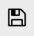

Plot Save/fr
|
|
| Emplacement du menu |
|---|
| Graphique → Enregistrer le graphique |
| Ateliers |
| Plot |
| Raccourci par défaut |
| Aucun |
| Introduit dans la version |
| - |
| Voir aussi |
| Aucun |
Description
Le module standard plot fournit déjà un outil minimal pour sauvegarder les graphiques  atelier Plot en utilisant le Gestionnaire des extensions, un outil plus complet pour sauvegarder le graphe actif sera disponible. Avec cet outil, vous pouvez également sélectionner la taille et la résolution de l'image de sortie.
atelier Plot en utilisant le Gestionnaire des extensions, un outil plus complet pour sauvegarder le graphe actif sera disponible. Avec cet outil, vous pouvez également sélectionner la taille et la résolution de l'image de sortie.
{kind=link}

Utilisation
Sélectionnez l'onglet du graphique que vous voulez sauvegarder, et lancez cet outil. Utilisez le bouton de sélection du chemin pour afficher une boîte de dialogue de fichier où vous pouvez choisir l'emplacement et le format du fichier.

Bouton de sélection du chemin
Options
- File path : vous pouvez définir le chemin de l'image de sortie (y compris l'extension du format) sur la ligne de texte.
- Size : vous pouvez spécifier, la largeur, et, la hauteur de l'image (pouces).
- dpi : vous pouvez définir la résolution (points par pouce). La résolution finale (en pixels) sera le produit, de la largeur par hauteur.
- Démarrer avec FreeCAD
- Installation : Téléchargements, Windows, Linux, Mac, Logiciels supplémentaires, Docker, AppImage, Ubuntu Snap
- Bases : À propos de FreeCAD, Interface, Navigation par la souris, Méthodes de sélection, Objet name, Préférences, Ateliers, Structure du document, Propriétés, Contribuer à FreeCAD, Faire un don
- Aide : Tutoriels, Tutoriels vidéo
- Ateliers : Std Base, Assembly, BIM, CAM, Draft, FEM, Inspection, Material, Mesh, OpenSCAD, Part, PartDesign, Points, Reverse Engineering, Robot, Sketcher, Spreadsheet, Surface, TechDraw, Test